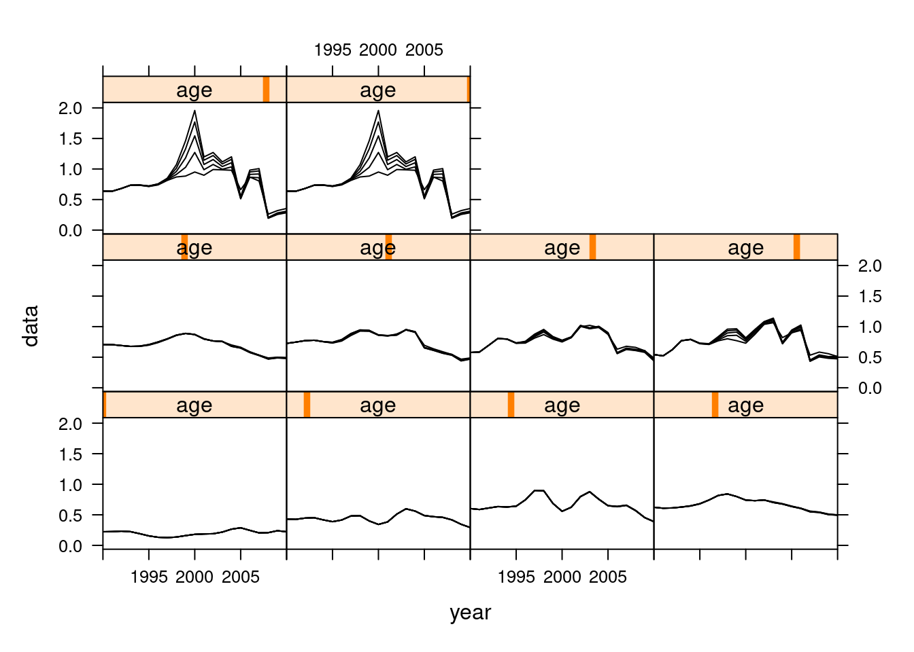
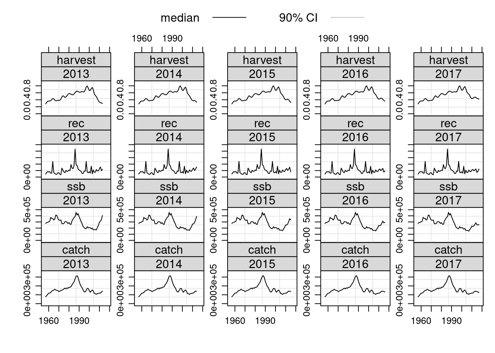

Virtual Population analysis using eXtended Survivor Analysis
04 July, 2021
Required packages
To follow this tutorial you should have installed the following packages:
install.packages(c("FLCore", "FLAssess", "FLXSA"), repos="http://flr-project.org/R")# This chunk loads all necessary packages, trims pkg messages
library(FLCore)
library(FLAssess)
library(FLXSA)Introduction
What is VPA
Virtual population analysis (VPA) is a modeling technique commonly used in fisheries science for reconstructing the historical population structure of an age structured fish stock using information on the deaths of individuals in each time step. The time steps are typically, though not necessarily, annual and the deaths are usually partitioned into mortality due to fishing and natural mortality. In some instances natural mortality may be further partitioned into predation mortality and mortality from other causes, such as disease, senesence etc.
VPA is the most commonly used term to refer to cohort reconstruction techniques used in fisheries. It is virtual in the sense that the population size is not observed or measured directly but is inferred or backcalculated to have been a certain size in the past. Several different software implementations of cohort reconstruction for fish populations exist including ADAPT which is often used in Canada and the USA and XSA (Shepherd 1999) which is commonly used in Europe. The back-calculations in these implementations work the same way but they differ in the statistical methods used for “tuning” to indices of population size. Tuning refers to the use of auxilliary information to determine the terminal fishing mortalities and population numbers. Most tuning approaches involve a regression of fishing mortality against fishing effort to estimate population abundance at age through an iterative convergence to some threshold criterion. Relatively simple techniques, the Laurec-Shepherd method (???) for example, have been shown to work well with simulated data but there is little theoretical work to justify or validate these approaches (II and Deriso 1999).
A number of assessment methods are made available in FLR as well as the basic VPA tools to enable you to develop your own assessment methods. In this tutorial we will cover the basic VPA tools, simple methods for tuning a VPA and finally show how to run FLXSA.
Stock assessment methods within the FLR package structure
The package FLAssess contains the basic class for age and biomass based stock assessments. It provides a standard class, FLAssess, for data input,
stock status estimation and diagnostic inspection. The FLAssess package has a variety of uses. It can be applied within a stock assessment working group setting or, alternatively, as part of the management procedure in a formal Management Strategy Evaluation (MSE). FLAssess provides a common interface for existing stock assessment methods (e.g. XSA) allowing methods to be used interchangeably. It also includes various methods of general use such as setting up a short-term forecast (stf), running VPAs (VPA or SepVPA) and calculating F from catches. There are several steps to be completed when conducting an assessment. This tutorial considers only the process of running VPA and FLXSA stock assessment model.
Additional tutorials are available that will introduce you to other parts of the FLR toolset.
We will start by importing the data sets for the North Sea Plaice stock and the fishery independent abundance indices. We will use these example data sets for all of the examples in this tutorial.
data(ple4)
data(ple4.indices)The North Sea Plaice FLStock object already has values estimated for harvest and stock numbers. We should remove these first and replace them with NA.
harvest(ple4)[] <- NA
stock.n(ple4)[] <- NAWe should note at this point that the example below should not be considered the definitive assessment for the North Sea Plaice. We provide this example merely to show the procedure for conducting assessments using FLR.
The VPA method
The VPA method implements Pope’s Virtual Population Analysis (VPA). It is called with the command VPA which returns an object of class FLVPA that is itself an extension of the FLAssess class. The VPA method estimates population numbers and fishing mortalities at age by back-calculating values down each cohort. To do this, the method requires initial values of harvest for the terminal age and terminal year in the FLStock object. These terminal values must be specified by the user prior to running the VPA. The arguments to the VPA method are the FLStock object for which values are to be calculated and two optional arguments.
The range method will show details of the age and year range of the ple4 FLStock object. We can use this information to manually specify the terminal values in the harvest slot. In this instance we will set these
values to 1.0. Remember to convert the values to be of type character when indexing the FLQuants.
harvest(ple4)[ac(range(ple4)["max"]), ] <- 1
harvest(ple4)[, ac(range(ple4)["maxyear"])] <- 1
ple4.vpa <- VPA(ple4, fratio = 1, fit.plusgroup = T)
ple4.new <- ple4 + ple4.vpa
## Have a look in stock number ##
stock.n(ple4.vpa)[, ac(2005:range(ple4)["maxyear"])]An object of class "FLQuant"
, , unit = unique, season = all, area = unique
year
age 2005 2006 2007 2008 2009 2010 2011
1 727422.7 714089.7 1080988.1 860680.4 811461.7 1061031.1 1148353.6
2 740467.9 494608.8 505294.6 796821.9 631147.0 575619.3 762530.4
3 190271.1 413340.6 281588.2 289082.4 475010.1 402704.6 386692.2
4 273062.5 92337.1 200594.2 134282.1 147948.4 272930.1 245506.7
5 45186.6 135618.8 47632.4 106297.1 72270.2 80610.3 150395.0
6 34257.0 22604.0 72879.2 27001.3 61282.3 41221.8 44890.0
7 15049.4 17133.2 12161.7 40948.6 15756.0 36685.1 24284.4
8 7415.5 8112.3 9645.0 6851.3 23432.2 9331.3 22231.0
9 8478.0 4526.7 5157.5 6235.4 4486.5 15571.3 6298.0
10 5270.4 9513.7 10261.4 11855.6 14230.4 14703.3 23426.0
year
age 2012 2013 2014 2015 2016 2017
1 889512.4 971160.1 1024564.4 488076.4 396779.2 189714.5
2 883818.9 711636.0 755794.7 728978.7 320424.8 236873.2
3 523353.9 604586.3 475967.2 484846.7 444943.1 182714.8
4 230998.4 299022.9 341507.5 272373.6 268931.6 217290.6
5 135024.8 124247.2 157044.0 176299.0 138428.9 124591.1
6 80728.3 69083.3 61061.0 76403.8 84867.4 63401.4
7 24682.3 41024.4 33728.5 28953.6 34952.6 35366.6
8 14657.1 14415.4 22299.4 16289.6 11853.3 12982.4
9 15148.4 9809.2 8957.9 12073.5 7364.8 4233.0
10 22469.5 27525.0 26113.7 23046.2 21101.0 14646.2
units: 1000 ## Have a look in fishing mortality ##
harvest(ple4.vpa)[, ac(2004:range(ple4)["maxyear"])]An object of class "FLQuant"
, , unit = unique, season = all, area = unique
year
age 2004 2005 2006 2007 2008 2009 2010 2011 2012
1 0.26372 0.28574 0.24587 0.20500 0.21018 0.24339 0.23035 0.16183 0.12311
2 0.54862 0.48301 0.46332 0.45843 0.41730 0.34934 0.29782 0.27638 0.27971
3 0.73103 0.62300 0.62299 0.64050 0.56985 0.45412 0.39488 0.41522 0.45974
4 0.64361 0.59985 0.56193 0.53505 0.51953 0.50724 0.49595 0.49787 0.52014
5 0.64425 0.59268 0.52104 0.46763 0.45075 0.46144 0.48541 0.52218 0.57014
6 0.70361 0.59288 0.51983 0.47648 0.43866 0.41312 0.42913 0.49813 0.57692
7 0.65271 0.51795 0.47458 0.47385 0.45821 0.42384 0.40088 0.40491 0.43779
8 0.48009 0.39359 0.35292 0.33619 0.32338 0.30868 0.29314 0.28359 0.30160
9 0.29044 0.26820 0.21355 0.16280 0.14003 0.14135 0.15646 0.17980 0.21238
10 0.29044 0.26820 0.21355 0.16280 0.14003 0.14135 0.15646 0.17980 0.21238
year
age 2013 2014 2015 2016 2017
1 0.15072 0.24038 0.32082 0.41586 1.00000
2 0.30222 0.34394 0.39370 0.46172 1.00000
3 0.47117 0.45817 0.48938 0.61671 1.00000
4 0.54399 0.56119 0.57682 0.66942 1.00000
5 0.61040 0.62049 0.63109 0.68087 1.00000
6 0.61697 0.64618 0.68204 0.77532 1.00000
7 0.50961 0.62781 0.79309 0.89040 1.00000
8 0.37576 0.51355 0.69381 0.92970 1.00000
9 0.25745 0.31989 0.40944 0.56452 1.00000
10 0.25745 0.31989 0.40944 0.56452 1.00000
units: f ## Plot results ##
plot(FLStocks(ple4=ple4, vpa=ple4.new))
plot(FLStocks(vpa=ple4.new))
The estimated population numbers and fishing mortality values at age from the VPA are now available in the returned object. Note that the terminal values for fishing mortalty are the user defined values that were specified prior to running the VPA.
A simple method for tuning a VPA
As noted above the VPA method requires user defined terminal estimates of fishing mortality. This dependency limits the usefulness of the method since it is often the most recent, terminal, estimates that are of most concern to fishery managers. Additional catch at age and effort information, derived either from a sub component of the fishery or from a fishery independent source such as a research survey, can be used to ‘tune’ the assessment, as described above, and thereby obtain better estimates of fishing mortality and stock numbers in the most recent years. Several so-called ad hoc techniques for tuning a VPA have been developed. A relatively simple technique that has been widely used is the Laurec Shepherd method. This method can be easily implemented in FLR using the basic VPA tools that are provided in the FLAssess package.
The example shown below is a simple implementation that allows for a single tuning fleet. With a little extra effort it could be easily extended to accomodate multiple tuning fleets. The technical details of the method are not explained here.
# Define Laurec-Sheperd function #
lsm <- function(stock, index, fratio = 1, fit.plusgroup = T) {
harvest(stock)[, ac(range(stock)["maxyear"])] <- 0.5
diff <- 1
while (diff > 1e-06) {
stock <- stock + VPA(stock, fratio = fratio)
ages <- range(index)["min"]:range(index)["max"]
yrs <- range(index)["minyear"]:range(index)["maxyear"]
stk <- trim(stock, year = yrs, age = ages)
Cp <- catch.n(index)/catch.n(stk)
q <- sweep(Cp * harvest(stk), 2, effort(index), "/")
gmq <- apply(q, 1, function(x) exp(mean(log(x), na.rm = T)))
mFp <- gmq * c(apply(effort(index), 1, mean))
Fr <- mFp * (apply(Cp, 1, mean, na.rm = T))^-1
Fnew <- c(Fr, rep(Fr[ac(max(ages)), ], 1))
diff <- sum(abs(harvest(stock)[, ac(range(stock)["maxyear"])] -
Fnew))
harvest(stock)[, ac(range(stock)["maxyear"])] <- c(Fnew)
}
res <- VPA(stock, fratio = fratio, fit.plusgroup = fit.plusgroup)
index.res(res) <- FLQuants(q)
return(res)
}The new Laurec-Shepherd function can now be called without having to specify terminal values in the harvest slot. The arguments to the VPA method are also formally declared as arguments to our new function. Note that the function returns an object of class FLVPA that has been created from a call to the VPA method and that the catchability residuals are stored in the index.res slot of the returned object.
harvest(ple4)[] <- NA
stock.n(ple4)[] <- NA
ple4.LSvpa <- lsm(ple4, ple4.indices[[1]], fratio = 1, fit.plusgroup = T)
ple4.new2 <- ple4 + ple4.LSvpa
stock.n(ple4.LSvpa)[, ac(2005:range(ple4)["maxyear"])]An object of class "FLQuant"
, , unit = unique, season = all, area = unique
year
age 2005 2006 2007 2008 2009 2010 2011
1 731905.9 719384.2 1090813.8 869716.2 820615.7 1089763.0 1181196.2
2 745531.6 498662.7 510082.8 805709.5 639320.0 583898.2 788517.0
3 191861.1 417913.5 285249.8 293407.5 483040.5 410092.4 394177.8
4 276099.6 93771.2 204718.7 137584.1 151851.6 280184.0 252183.0
5 45872.9 138358.7 48926.7 110020.5 75251.5 84134.6 156945.6
6 35005.9 23223.2 75353.0 28170.3 64645.8 43914.8 48073.1
7 15524.6 17808.8 12720.8 43182.9 16812.2 39724.5 26717.7
8 7719.9 8541.4 10255.2 7356.3 25450.6 10285.7 24977.9
9 8872.3 4801.7 5545.4 6787.2 4943.0 17396.3 7161.0
10 5515.5 10091.8 11033.1 12904.6 15678.6 16426.6 26636.0
year
age 2012 2013 2014 2015 2016 2017
1 935559.6 1043879.5 1156893.0 589017.9 636785.6 673808.7
2 913529.8 753296.2 821582.4 848664.4 411697.5 453860.7
3 546853.1 631453.0 513636.1 544320.8 553122.8 265193.9
4 237762.2 320250.5 365774.9 306403.6 322653.2 314942.5
5 141053.7 130354.0 176208.2 198204.4 169147.4 173058.4
6 86642.8 74524.5 66570.5 93696.5 104632.0 91114.7
7 27557.0 46362.5 38637.8 33923.4 50553.7 53183.4
8 16856.1 17012.9 27120.6 20719.6 16331.3 27043.7
9 17632.4 11797.7 11305.9 16428.4 11361.6 8266.6
10 26154.0 33104.8 32958.6 31359.0 32552.1 28602.4
units: 1000 harvest(ple4.LSvpa)[, ac(2004:range(ple4)["maxyear"])]An object of class "FLQuant"
, , unit = unique, season = all, area = unique
year
age 2004 2005 2006 2007 2008 2009 2010 2011 2012
1 0.26215 0.28372 0.24382 0.20296 0.20776 0.24033 0.22356 0.15697 0.11669
2 0.54513 0.47882 0.45856 0.45301 0.41162 0.34402 0.29292 0.26597 0.26929
3 0.72533 0.61591 0.61364 0.62913 0.55866 0.44465 0.38623 0.40553 0.43508
4 0.63651 0.59091 0.55053 0.52097 0.50340 0.49049 0.47955 0.48101 0.50102
5 0.63407 0.58072 0.50767 0.45205 0.43174 0.43858 0.45970 0.49411 0.53801
6 0.68809 0.57582 0.50191 0.45674 0.41616 0.38695 0.39693 0.45647 0.52530
7 0.63370 0.49750 0.45191 0.44768 0.42871 0.39135 0.36398 0.36061 0.38229
8 0.46306 0.37482 0.33195 0.31276 0.29758 0.28048 0.26210 0.24825 0.25681
9 0.27920 0.25466 0.20003 0.15053 0.12790 0.12744 0.13887 0.15637 0.17965
10 0.27920 0.25466 0.20003 0.15053 0.12790 0.12744 0.13887 0.15637 0.17965
year
age 2013 2014 2015 2016 2017
1 0.13947 0.20983 0.25817 0.23864 0.19741
2 0.28294 0.31169 0.32808 0.33983 0.40273
3 0.44601 0.41661 0.42296 0.46319 0.57450
4 0.49744 0.51272 0.49413 0.52295 0.57557
5 0.57199 0.53160 0.53885 0.51865 0.60975
6 0.55690 0.57416 0.51703 0.57670 0.58221
7 0.43620 0.52315 0.63102 0.52558 0.54799
8 0.30864 0.40128 0.50084 0.58086 0.36387
9 0.20924 0.24468 0.28392 0.32874 0.39346
10 0.20924 0.24468 0.28392 0.32874 0.39346
units: f # Compare the results with previous fits.
plot(FLStocks(vpa=ple4.new2))
FLXSA
The Laurec-Shepherd method above is a relatively simple technique for tuning a VPA. XSA is a
more sophisticated method that uses information on individual cohort sizes to estimate survivors at each age in the terminal population. Although the modelling approach is more involved the method requires the same input of catch numbers at age and indices of catch per unit effort and it retains at its core the basic VPA method. The details of the XSA method are too complex to show here, or to code individually as we have for the Laurec-Shepherd approach. Instead the FLXSA method has been developed as an additional package to FLAssess.
The FLXSA control object
The FLXSA.control object contains all of the user defined model settings for running an XSA analysis. It can be created in several different ways. The simplest method is to accept all of the default settings by calling the FLXSA.control function without any extra arguments:
FLXSA.control()tol 1e-09
maxit 30
min.nse 0.3
fse 0.5
rage 0
qage 10
shk.n TRUE
shk.f TRUE
shk.yrs 5
shk.ages 5
window 100
tsrange 20
tspower 3
vpa FALSE Alternatively the default settings can be over-written by specifying values at the point of creation or by overwriting them afterwards.
ctrl <- FLXSA.control(maxit = 50, qage = 8)
ctrl <- FLXSA.control()
slot(ctrl, 'qage') <- as.integer(8)
slot(ctrl, 'maxit') <- as.integer(50)Note that in the example above, when modifying the control object after creation, it is necessary to coerce the values 8 and 50 to type integer. This is because the default type numeric cannot be used in this slot. Such coercion is not necessary when using the FLXSA.control function as this check is performed internally by the function. You can use the getSlots function to determine the class of object associated with any given slot.
xsa.control <- FLXSA.control(maxit = 50, fse = 2.5)
ple4.xsa <- FLXSA(ple4, ple4.indices, xsa.control)
ple4.xsa.t1 <- FLXSA(ple4, ple4.indices[[1]], xsa.control)Once the control object has been created, the XSA analysis can be run as a one-line command. The ``FLXSA function returns an object of class FLXSA which extends the FLAssess class. The FLXSA object contains all of the information in the FLAssess class plus additional information specific to the XSA assessment method, such as the survivors estimates and their internal and external standard errors. The control object used for the assessment is also stored in the returned FLXSA object to provide a record of what settings were used for that particular run. All of the settings in the returned control object will remain the same except for the maxit slot that contains the maximum number of iterations for the analysis. This value will be overwritten with the actual number of iterations taken to reach convergence, if indeed the model had converged before the maximum number initially specified.
XSA Results
Appart from the model diagnostics, the FLXSA method returns two important results, namely the estimated values of fishing mortality and population numbers at age. These are returned as FLQuants and are stored in the harvest and stock.n slots, respectively, of the FLXSA object. These estimated values can be very easilly read back into an FLStock object using the + operator. Once the results have been read back into a FLStock object we can look at some of the key information such as SSB, recruitment and mean fishing mortality values. But before concentrating too much on the results of the assessment it is advisable to first investigate some of the model diagnostics.
ple4.new <- ple4 + ple4.xsa
ple4.ssb <- ssb(ple4.new)
ple4.rec <- rec(ple4.new)
ple4.fbar <- fbar(ple4.new)XSA Diagnostics
There are many diagnostic checks that one might be interested in conducting to examine the model fit. The first might be to see if the model has reached convergence within the specified number of iterations.
slot(slot(ple4.xsa, "control"), "maxit")[1] 50Additionally one can check for discrepancies between the internal and external standard errors of the survivors estimates. Very often plots of the catchability residuals are made to inspect for any obvious trends or departures from the assumption of constant catchability over time. Some examples of these plots and details of their creation from FLR objects are provided below but you should also consult the tutorial on lattice plotting and advanced graphics for FLR to see examples of other ways to graphically display your data.
There are several ways to access diagnostic information about your fitted XSA model. The easiest is perhaps to use the diagnostics function, which will replicate the diagnostic output produced by the original VPA suite (developed in the early 1990’s). Note that this function merely outputs the results to the screen and no object is created by the method. The function was created to allow the user to cut and paste the information from the console to a report. The output can be quite long, particularly if the assessment comprises a large number of ages and many tuning indices. The standard output can be divided roughly into eight sections each providing different information about the model and the fit. These sections comprise the model dimensions; parameter settings; regression weights; the estimated fishing mortalities and population numbers for the last 10 years; the aggregated survivors estimates; the log catchability residuals for each of the tuning indices and finally the individual survivors estimates for each year-class represented in the terminal year.
In order to make this document more readable we will print out only a few sections of the diagnostic output at a time. We can do this by passing a vector of TRUE and FALSE values to the sections argument of the diagnostics method. By default all sections are set to TRUE so that all of the information is output to the screen. In order to reduce the quantity of output further
we will run a new XSA for a reduced number of ages and with only one tuning index and will start by outputting only the dimension information and the parameter settings from our diagnostics.
ple4.xsa2 <- FLXSA(trim(ple4, age = 1:7), ple4.indices[[3]],
xsa.control)
diagnostics(ple4.xsa2, sections = c(T, T, rep(F, 6)))FLR XSA Diagnostics 2021-07-04 22:08:06
CPUE data from indices
Catch data for 61 years 1957 to 2017. Ages 1 to 7.
fleet first age last age first year last year alpha beta
1 SNS 1 6 1970 2017 <NA> <NA>
Time series weights :
Tapered time weighting applied
Power = 3 over 20 years
Catchability analysis :
Catchability independent of size for all ages
Catchability independent of age for ages > 6
Terminal population estimation :
Survivor estimates shrunk towards the mean F
of the final 5 years or the 5 oldest ages.
S.E. of the mean to which the estimates are shrunk = 2.5
Minimum standard error for population
estimates derived from each fleet = 0.3
prior weighting not appliedNext we can output the regression weights and the fishing mortalities and population numbers for the last 10 years and also the aggregated survivors estimates.
diagnostics(ple4.xsa2, sections = c(F, F, T, T, T, T, F, F))Regression weights
year
age 2008 2009 2010 2011 2012 2013 2014 2015 2016 2017
all 0.751 0.82 0.877 0.921 0.954 0.976 0.99 0.997 1 1
Fishing mortalities
year
age 2008 2009 2010 2011 2012 2013 2014 2015 2016 2017
1 0.207 0.247 0.200 0.124 0.105 0.104 0.147 0.122 0.183 0.107
2 0.443 0.343 0.304 0.231 0.204 0.249 0.218 0.211 0.136 0.284
3 0.535 0.499 0.385 0.429 0.359 0.306 0.349 0.261 0.254 0.171
4 0.550 0.456 0.580 0.479 0.549 0.372 0.295 0.380 0.262 0.242
5 0.570 0.506 0.410 0.689 0.535 0.674 0.340 0.240 0.346 0.223
6 0.692 0.609 0.498 0.383 1.007 0.552 0.786 0.265 0.182 0.312
7 0.692 0.609 0.498 0.383 1.007 0.552 0.786 0.265 0.182 0.312
XSA population number (Thousand)
age
year 1 2 3 4 5 6 7
2008 873829 762854 304706 129307 89155 19273 30076
2009 801925 642724 443318 161500 67535 45627 11911
2010 1207505 566603 412620 243597 92626 36835 30880
2011 1468479 894604 378145 254039 123415 55638 25433
2012 1036439 1173206 642406 222804 142348 56052 13725
2013 1382295 844446 865899 406006 116431 75436 38620
2014 1603721 1127599 595646 577062 253287 53708 28858
2015 1171171 1252542 820617 379995 388764 163122 68342
2016 810347 938140 917890 571988 235246 276692 124405
2017 1195955 610611 741191 644206 398100 150631 83772
Estimated population abundance at 1st Jan 2018
age
year 1 2 3 4 5 6 7
2018 0 973125 416096 565666 457969 288826 99986And finally we can output the catchability residuals and the individual survivors estimates. Note that very little thought went into the parameter settings for this particular model fit so please don’t interrogate the output presented here too closely. Also note that we do not normally expect the diagnostics output to be broken up as we have here. We present it in this way purely to make it more presentable in this document. By default all sections are set to TRUE so it is very likely that you won’t need to give this argument at all when calling the diagnostics method.
diagnostics(ple4.xsa2, sections = c(F, F, F, F, F, F, T, T))
Fleet: SNS
Log catchability residuals.
year
age 1970 1971 1972 1973 1974 1975 1976 1977 1978 1979 1980
1 0.113 0.922 1.057 1.332 0.162 0.239 0.132 0.504 0.375 0.715 1.506
2 1.929 2.996 2.471 1.908 1.773 1.370 0.527 1.119 2.057 1.965 2.128
3 2.505 1.262 2.440 1.875 1.747 2.565 0.449 1.537 0.203 1.412 0.461
4 2.032 0.150 -0.335 1.402 0.867 0.156 0.084 1.271 0.224 0.742 0.603
5 1.015 0.223 0.938 -1.072 0.773 -0.406 NA 1.019 -0.233 -0.730 -0.013
6 -0.364 -0.634 NA -1.346 -1.382 NA -1.832 NA -1.264 0.206 -0.981
year
age 1981 1982 1983 1984 1985 1986 1987 1988 1989 1990 1991
1 0.677 1.062 0.709 1.068 0.283 0.598 0.360 0.503 0.774 0.601 1.535
2 2.248 1.485 1.299 1.390 1.773 0.871 1.462 1.418 1.655 1.101 1.644
3 0.896 1.009 -0.655 0.946 0.895 0.689 0.488 2.003 1.669 1.332 0.891
4 -0.702 0.035 -0.523 -1.132 0.217 -0.210 0.250 1.910 2.710 1.285 1.529
5 0.032 -1.108 -1.516 NA -0.925 -1.052 -0.653 0.559 1.490 0.998 0.538
6 -1.114 -0.759 -2.432 NA -2.783 -1.378 -1.131 -1.053 1.306 0.184 -0.270
year
age 1992 1993 1994 1995 1996 1997 1998 1999 2000 2001 2002
1 1.481 1.164 0.973 0.739 0.469 1.101 1.119 1.289 0.770 0.433 0.425
2 1.977 1.774 1.513 0.859 1.694 0.613 1.815 1.706 0.462 0.513 0.003
3 1.449 0.786 0.780 0.371 1.489 0.319 2.106 2.528 0.567 -0.096 -0.351
4 1.257 -0.400 -0.478 -0.056 -0.389 -0.676 -0.350 1.683 1.319 0.171 -0.554
5 0.811 0.024 -0.746 -0.041 0.386 NA -0.613 0.081 -1.638 2.240 0.227
6 0.111 0.191 -2.608 NA NA -0.322 NA NA -1.035 0.315 -0.209
year
age 2003 2004 2005 2006 2007 2008 2009 2010 2011 2012 2013
1 NA 0.391 0.183 0.316 0.100 0.310 0.435 -0.226 -0.046 -0.847 -0.176
2 NA 0.478 0.017 0.232 0.452 0.312 0.122 0.113 -0.856 -0.206 0.186
3 NA 0.721 -0.240 -0.024 -0.691 0.323 -0.019 0.045 -0.378 -0.162 0.378
4 NA 0.125 1.165 0.161 -0.650 0.883 -0.955 -0.909 -0.711 -0.442 0.486
5 NA -0.088 -0.421 0.641 NA 0.085 -0.213 -1.290 0.412 -0.533 0.853
6 NA 0.052 0.028 NA -0.200 -0.023 NA NA 0.129 -0.063 0.049
year
age 2014 2015 2016 2017
1 -0.176 0.086 0.021 0.006
2 -0.417 0.276 -0.215 -0.031
3 -0.376 0.539 -0.128 0.137
4 0.148 0.668 0.264 0.154
5 -0.587 0.152 0.837 -0.213
6 -0.086 0.219 -0.068 0.009
Mean log catchability and standard error of ages with catchability
independent of year class strength and constant w.r.t. time
1 2 3 4 5 6
Mean_Logq -4.1782 -5.5729 -6.3623 -7.0081 -7.4844 -7.3835
S.E_Logq 0.5162 0.8819 0.8866 0.8817 0.8357 0.9003
Terminal year survivor and F summaries:
,Age 1 Year class =2016
source
scaledWts survivors yrcls
SNS 0.977 978305 2016
fshk 0.023 773780 2016
,Age 2 Year class =2015
source
scaledWts survivors yrcls
SNS 0.969 403220 2015
fshk 0.031 604524 2015
,Age 3 Year class =2014
source
scaledWts survivors yrcls
SNS 0.971 648476 2014
fshk 0.029 293770 2014
,Age 4 Year class =2013
source
scaledWts survivors yrcls
SNS 0.913 533680 2013
fshk 0.087 277605 2013
,Age 5 Year class =2012
source
scaledWts survivors yrcls
SNS 0.906 233051 2012
fshk 0.094 134437 2012
,Age 6 Year class =2011
source
scaledWts survivors yrcls
SNS 0.981 100592 2011
fshk 0.019 160164 2011Remember that the diagnostics method will only output text to the console, enabling you to copy and paste the output to a report or other document. If you want to access the diagnostic data you will need to access the specific slots of the returned FLXSA object. The information that you will requie is contained in various slots. The individual estimates of population number from each source (ie. tuning series and F shrinkage) and their individual weightings are stored as a dataframe in the diagnostics slot of the returned object. Other slots contain the internal and external standard errors; the log catchability residuals. For a more thorough description of the XSA diagnostics you should consult the VPA users manaual.
Plotting Diagnostics
Very often the quickest and simplest way to determine the fit of the model is through visual inspection of the various diagnostic outputs.
The default plot for ’‘’FLXSA’’’ class shows the weight given to each of the indices, incluiding the shrinkage, to estimate total numbers at age along ages and years. The size of the bubbles in the plot is proportional to the weight given to the index to estimate the terminal numbers at age. The rows corresponds with the indices used and the columns with age classes. The y axis represent the estimate of numbers at age obtained from each index.
plot(ple4.xsa2)
Below we provide examples of how to extract the relevant information from the return FLXSA object and to plot it using a variety of lattice functions available to R. We start by plotting the log catchability residuals at age from each of the three tuning series. The data are stored as an FLQuants object in the index.res slot of the FLXSA object. First we need to assign names to each of the FLQuant objects so we know which fleet they represent.
names(ple4.xsa@index.res) <- names(ple4.indices)
plot(xyplot(data ~ year | ac(age) + qname, data = index.res(ple4.xsa),
panel = function(x, y, ...) {
panel.xyplot(x, y, ...)
panel.loess(x, y, ...)
panel.abline(h = 0, col = "grey", lty = 2)
}))A simple comparison of the terminal year survivors estimates can be obtained from the information stored in the diagnostics slot of the FLXSA object. In the following example we first extract the information relevant to the survivors estimates in the final year and store it as a temporary object. The weights values contained in this data set are the raw fleet based weights that have been calculated from the standard errors of the fleet based survivors estimates at each age in the cohort. To aid visualisation and to see the relative contribution of each fleets estimate to the final estimated value of survivors we re-scale the weights to a maximum value of 1 and plot both the fleet based survivors estimates from each fleet and their scaled weight. The results show relatively consistent estimates of survivors from all fleets across most ages. The scaled weights show the some series to have the greatest influence on the terminal estimates at the younger ages whilst others have greater influence at older ages and that throughout all ages F shrinkage recieves very little weighting.
diag <- slot(ple4.xsa, "diagnostics")[is.element(slot(ple4.xsa,
"diagnostics")$year, 2008), ]
diag <- cbind(diag, w.scaled = diag$w/rep(tapply(diag$w, diag$yrcls, sum),
c(table(diag$yrcls))))
nplot <- barchart(ac(yrcls) ~ nhat, groups = source, data = diag,
col = grey(c(0.1, 0.6, 0.3, 0.8)), main = "N Estimates",
ylab = "Year Class", key = list(x = 0.3, y = 0.25, text = list(legend =
rev(c("BTS-Isis",
"BTS-Tridens", "fshk", "SNS"))), rectangles = list(col =
grey(rev(c(0.1,
0.6, 0.3, 0.8))))))
wplot <- barchart(ac(yrcls) ~ w.scaled, groups = source, data = diag,
col = grey(c(0.1, 0.6, 0.3, 0.8)), main = "Scaled Weights",
ylab = "", xlab = "Relative Weight")
print(nplot, position = c(0, 0, 0.5, 1), more = TRUE)
print(wplot, position = c(0.5, 0, 1, 1))Sensitivity to different model settings.
The simplified calling format of FLXSA makes it very easy to run multiple analyses to investigate model sensitivity to parameter settings. A wide variety of such investigations are possible. In this simple example we will look at the effect that different F shrinkage standard errors have on the terminal estimates of fishing mortality. We start by creating a vector of F shrinkage values to be used in the anlyses and by creating an FLQuant with sufficient dimensions to store the results. To do this we use the propagate function to extend an FLQuant in the 6th dimension by the number of runs that we are going to perform. The estimates of fishing mortality for each XSA run are stored in the FLQuant using the 6th dimension to hold each iteration. The results show little sensitivity to increasing F shrinkage values at values between 1.0 and 2.5 .
fsevals <- seq(0.5, 2.5, by = 0.5)
res <- propagate(harvest(ple4), length(fsevals))
for (i in 1:length(fsevals)) {
xsa.control <- FLXSA.control(fse = fsevals[i])
iter(res, i) <- harvest(FLXSA(ple4, ple4.indices, xsa.control))
}
plot(xyplot(data ~ year | age, groups = iter, data = res, type = "l",
col = "black", xlim = c(1990:2010)))
Retrospective Analyses
An important diagnostic check is to see how the estimated values vary as the time series of the input data changes. We can make use of existing R functions to apply the same assessment model to successively truncated the time series of input data. In this example we are using window to truncate the FLStock object to the specified year range, the + operator to pass the results of the XSA into the FLStock object and the tapply function to perform this action over the year range 2004:2008. Note that the resulting object, called ple4.ret, is of class FLStocks ie. a list of FLStock objects, each one having a separate year range.
retro.years <- 2013:2017
ple4.retro <- tapply(retro.years, 1:length(retro.years), function(x){
window(ple4,end=x)+FLXSA(window(ple4,end=x),ple4.indices)
})
# coerce into FLStocks object
ple4.retro <- FLStocks(ple4.retro)
# full retrospective summary plot
ple4.retro@names=ac(c(retro.years))###Add years to legend
plot(ple4.retro)
More information
- You can submit bug reports, questions or suggestions on this tutorial at https://github.com/flr/doc/issues.
- Or send a pull request to https://github.com/flr/doc/
- For more information on the FLR Project for Quantitative Fisheries Science in R, visit the FLR webpage, http://flr-project.org.
Software Versions
- R version 4.1.0 (2021-05-18)
- FLCore: 2.6.16
- FLXSA: 2.6.4
- FLAssess: 2.6.3
- Compiled: Sun Jul 4 22:08:34 2021
License
This document is licensed under the Creative Commons Attribution-ShareAlike 4.0 International license.
References
II, Terrance J. Quinn, and Richard B. Deriso. 1999. Quantitative Fish Dynamics. New York: Oxford University Press.
Shepherd, J. G. 1999. “Extended Survivors Analysis: An Improved Method for the Analysis of Catch-at-Age Data and Abundance Indices.” ICES Journal of Marine Science 56: 584–91.